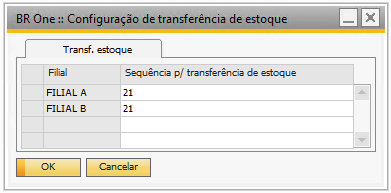

Configuração de Transferência de Estoque
Na tela ‘Configuração de transferência de estoque’ é realizado a configuração da sequência da transferência de estoque, que é realizada apenas uma única vez.
Para acessar a tela é necessário ir no menu:
Administração > Definição > Estoque > Configuração de transferência de estoque.
Nela informamos o campo ‘Sequência para transferência de estoque’, ou seja, este formulário possui a responsabilidade de conter as informações referentes à série de numeração de transferência de estoque para o processo de transferência de estoque e para o processo de transferência de estoque entre filiais.